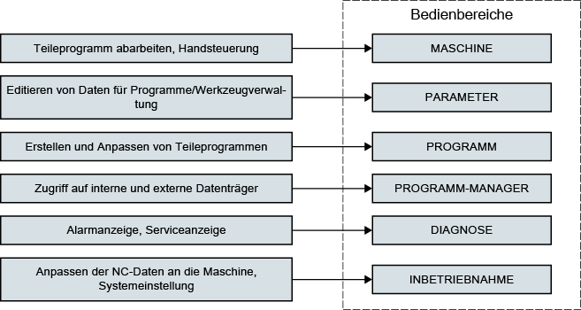

Die SINUMERIK-Steuerung ist eine CNC-Steuerung (Computerized Numerical Control) für Bearbeitungsmaschinen (z. B. Werkzeugmaschinen).
Mit der CNC-Steuerung können Sie u. a. folgende Grundfunktionen in Verbindung mit einer Werkzeugmaschine realisieren:
Erstellen und Anpassen von Teileprogrammen,
Abarbeiten von Teileprogrammen,
Handsteuerung,
Zugriff auf interne und externe Datenträger,
Editieren von Daten für Programme,
Verwalten von Werkzeugen, Nullpunkten und weiteren, in Programmen benötigten Anwenderdaten,
Diagnose von Steuerung und Maschine.
Die Grundfunktionen sind in der Steuerung zu folgenden Bedienbereichen zusammengefasst:
